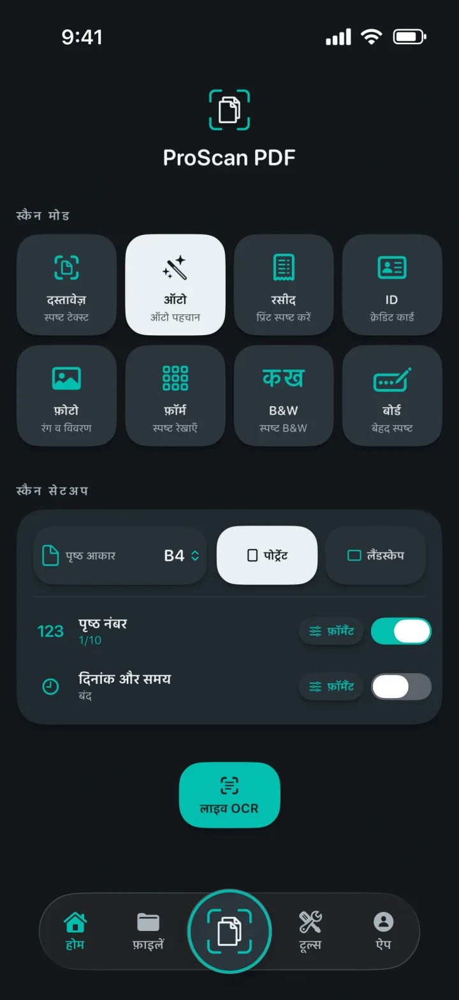
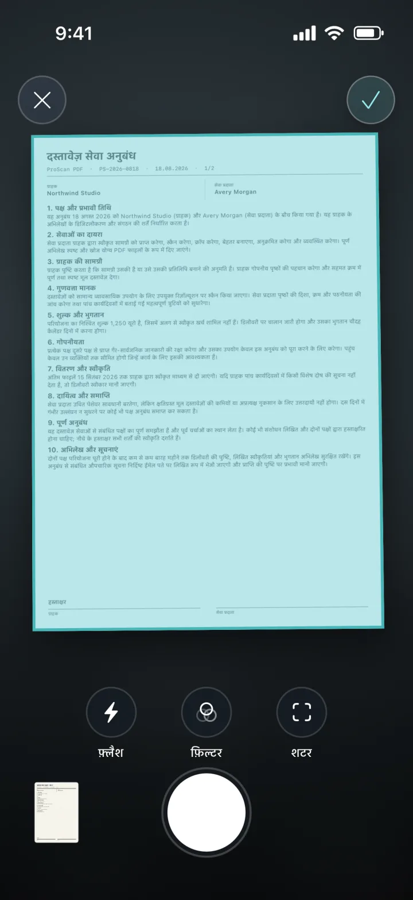
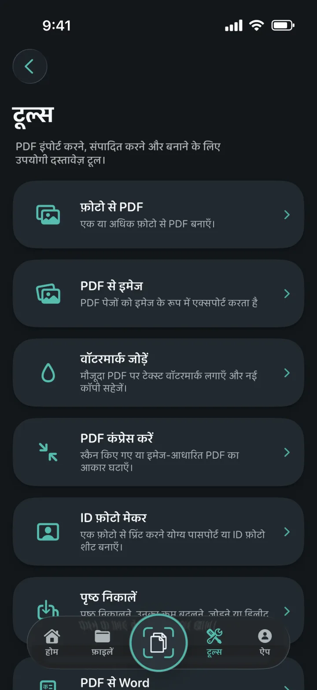
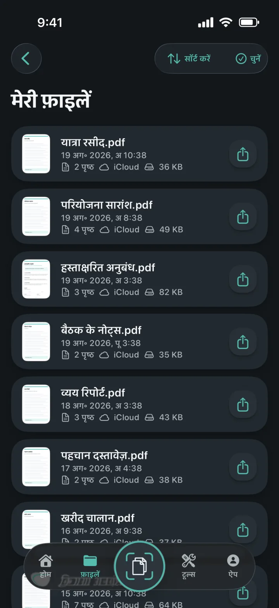
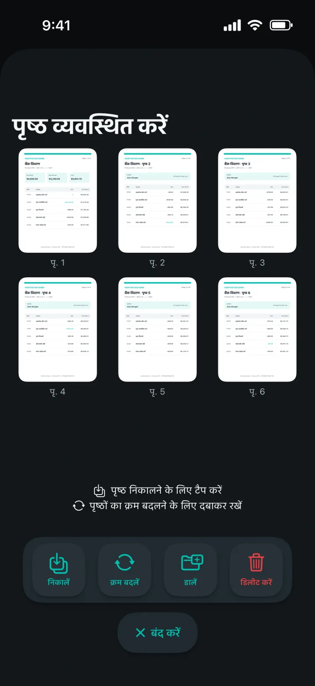
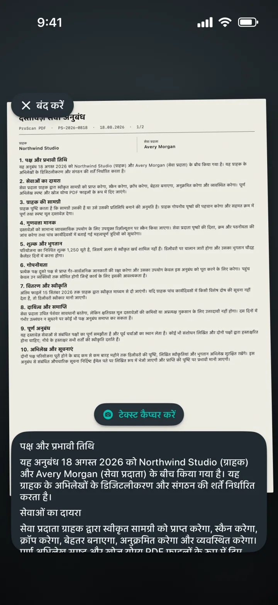

फ़ोटो से PDF
एक या अधिक फ़ोटो को साफ़-सुथरे PDF में बदलें।
हर पेज को समझने वाला स्मार्ट स्कैनर
दस्तावेज़, रसीदें, ID, नोट्स और फ़ोटो को साफ़-सुथरे PDF में बदलें। फिर बिना विज्ञापन या वॉटरमार्क के उन्हें एडिट, साइन, सुरक्षित और शेयर करें।

हर पेज को समझने वाला स्मार्ट स्कैनर
सही मोड चुनें, पेज को फ़्रेम में रखें और कैप्चर Apple के डॉक्यूमेंट स्कैनर पर छोड़ दें। शुरू करने से पहले पेज साइज़, ओरिएंटेशन, पेज नंबर और दिनांक व समय सेट करें।

सभी PDF टूल्स एक जगह
एक ही आसान वर्कस्पेस से PDF इंपोर्ट, कन्वर्ट, एडिट और बनाएँ।

एक या अधिक फ़ोटो को साफ़-सुथरे PDF में बदलें।
हर PDF पेज को इमेज के रूप में एक्सपोर्ट करें, फिर सेव या शेयर करें।
नई PDF कॉपी पर रंगीन टेक्स्ट वॉटरमार्क लगाएँ।
स्कैन और इमेज वाले PDF का फ़ाइल साइज़ घटाएँ।
क्रॉप और जाँच करके सही साइज़ या प्रिंट करने योग्य शीट एक्सपोर्ट करें।
PDF पेज निकालें, उनका क्रम बदलें, नए पेज जोड़ें या हटाएँ।
जहाँ संभव हो लेआउट सुरक्षित रखते हुए एडिट करने योग्य Word फ़ाइलें बनाएँ।
खोज योग्य कॉपी बनाएँ और व्यूअर में टेक्स्ट ढूँढें।


दस्तावेज़ हमेशा व्यवस्थित
लोकल कॉपी से लाइब्रेरी तेज़ी से खुलती है। निजी iCloud बैकअप दूसरे Apple डिवाइस पर जाने के बाद भी दस्तावेज़ उपलब्ध रखने में मदद करता है।
गोपनीयता डिज़ाइन का हिस्सा है
स्कैनिंग, OCR और PDF प्रोसेसिंग आपके डिवाइस पर लोकल रूप से होती है। ProScan PDF आपके दस्तावेज़ अपने सर्वर पर अपलोड नहीं करता।
गोपनीयता नीति पढ़ेंOCR और खोज योग्य दस्तावेज़
लाइव टेक्स्ट कैप्चर करें, स्कैन से एडिट करने योग्य सामग्री निकालें या खोज योग्य PDF कॉपी बनाएँ। सारी प्रोसेसिंग आपके iPhone या iPad पर होती है।

आपके हिसाब से डिज़ाइन
हर थीम ऐप का इंटरफ़ेस बदलती है और उससे मेल खाता होम स्क्रीन आइकन देती है।
ग्रेफाइट पर स्कैनर टील और पेपर व्हाइट।
गहरे काले पर इलेक्ट्रिक सायन और वायलेट।
हल्के पेपर बैकग्राउंड पर साफ़ नीले कंट्रोल।
सॉफ़्ट चारकोल पर कोरल, वायलेट और मिंट।
मिडनाइट नेवी पर शैम्पेन और ब्लश।
ग्रेफाइट पर कूल सिल्वर और पॉलिश्ड गोल्ड।
गहरे फ़ॉरेस्ट ग्रीन पर वॉर्म क्रीम और टेराकोटा।
अंग्रेज़ी, जर्मन, स्पैनिश, फ़्रेंच, इटैलियन, डच, पोलिश, ब्राज़ीलियन पुर्तगाली, यूरोपीय पुर्तगाली, तुर्की, सरल चीनी, जापानी, कोरियाई और हिन्दी में उपलब्ध।
सवालों के जवाब
गोपनीयता, स्टोरेज और ProScan PDF की सुविधाओं के बारे में साफ़ जानकारी।
नहीं। ProScan PDF ऐप में विज्ञापन नहीं दिखाता और स्कैन किए गए दस्तावेज़ों पर वॉटरमार्क नहीं लगाता।
मुख्य स्कैनिंग, OCR और PDF टूल्स आपके डिवाइस पर चलते हैं और ऑफ़लाइन काम करते हैं। iCloud बैकअप और शेयरिंग के लिए नेटवर्क कनेक्शन चाहिए।
तेज़ एक्सेस के लिए दस्तावेज़ ऐप की लोकल लाइब्रेरी में रहते हैं। iCloud उपलब्ध होने पर निजी बैकअप कॉपी आपके iCloud अकाउंट में सेव की जा सकती हैं।
फ़ोटो से PDF, PDF से इमेज, वॉटरमार्क, कंप्रेशन, ID फ़ोटो मेकर, पेज निकालना और व्यवस्थित करना, PDF से Word, खोज योग्य PDF, मर्ज, साइन और पासवर्ड सुरक्षा।
आपको हर दिन तीन मुफ़्त स्कैन मिलते हैं। Pro में अनलिमिटेड स्कैनिंग और सभी Pro टूल्स मिलते हैं।

अगला दस्तावेज़ बस एक टैप दूर
कोई विज्ञापन नहीं। कोई वॉटरमार्क नहीं।